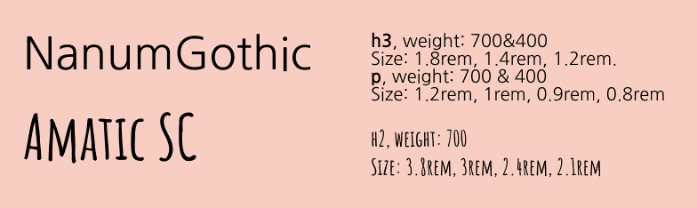
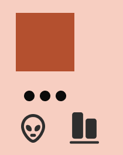

Jeg har i dette projekt lavet en farvepalette, som har taget udgangspunkt i nedestående billede. Jeg har valgt at bruge de lidt støvede, røde nuancer som de primære farver. De sorte og den hvide farve som sekundær farve. Og den varme, mørke røde som accentfarve. Jeg har valgt at arbejde med en display-font samt en sans serif-font. De kan også ses nedenfor. Jeg har i styletilet oplyst diverse størrelser - disse er dog kun gældende i del a, da jeg ellers har taget udgangspunkt i hvordan wireframes'ne har præsenteret font-størrelserne.

